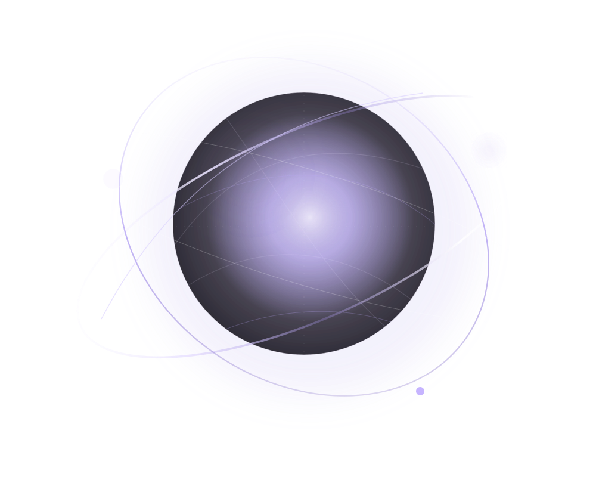

Sites vitrines
Des sites clairs et distinctifs qui racontent une activité, structurent l’information et donnent confiance.
Explorer le service ↗Nous façonnons des expériences numériques où la direction artistique rencontre la précision du développement. Des idées singulières, pensées pour exister au-delà de l’écran.

Une sélection de concepts indépendants qui explorent différentes façons de raconter, présenter et construire le digital.
Du premier croquis à la mise en ligne, chaque décision sert l’usage, l’identité et la clarté de votre projet.
Des sites clairs et distinctifs qui racontent une activité, structurent l’information et donnent confiance.
Explorer le service ↗Des pages focalisées sur une offre, un lancement ou une campagne, pensées pour guider vers l’action.
Explorer le service ↗Des expériences d’achat lisibles, de la découverte produit à la commande, avec une administration adaptée.
Explorer le service ↗Des outils métier et plateformes sur mesure, cadrés selon les besoins et la complexité réelle.
Explorer le service ↗ORBE & ONIX est un studio indépendant en construction, consacré à la conception et au développement web. Notre approche associe exploration visuelle, réflexion sur les usages et exécution technique. Nous préférons les idées bien construites aux effets gratuits.
Découvrir notre approche ↗Un espace d’expérimentation autour des matières, du mouvement, de la typographie et des interfaces.
Une étude de transparence et de profondeur dessinée en CSS et SVG, sans image matricielle.
Vous avez un projet de site, de boutique ou d’application ? Parlons de son objectif, de ses usages et de la bonne manière de le construire.
Préparer votre projet ↗